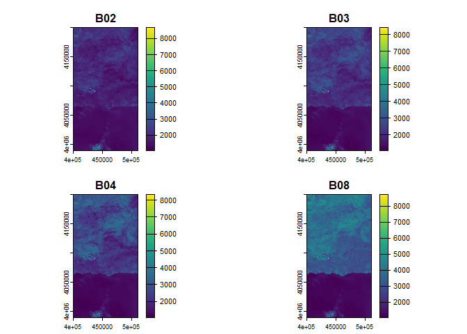

We frequently download files with satellite bands from the ESA and USGS websites to perform data analysis, transform them or store them in DBMS. They are downloaded as files in ZIP or TAR format. In some cases, it is necessary to download several files that cover the study area, so the first operation to perform is to merge the bands. To access the bands we have to explicitly indicate the name and location of their files.
The goal of satres (satellite spectral and spatial resolution) is to partially automate these operations. It is enough to indicate the folder that contains the decompressed files: Satellite bands are automatically obtained by name (spectral) and spatial resolution; if we have several files to cover a geographical area, the corresponding bands are automatically merged. The result can be stored on disk and can also be obtained as objects of class SpatRaster, from package terra.
Currently supports files obtained from the following sources and characteristics:
Landsat 8-9 OLI/TIRS C2 L1 (Landsat 8-9 Operational Land Imager and Thermal Infrared Sensor Collection 2 Level-1).
Landsat 7 ETM+ C2 L1 (Landsat 7 Enhanced Thematic Mapper Plus Collection 2 Level-1).
Landsat 4-5 TM C2 L1 (Landsat 4-5 Thematic Mapper Collection 2 Level-1).
Sentinel-2 MSI S2MSI1C (Sentinel-2 Multi Spectral Instrument Level-1C).
Sentinel-2 MSI S2MSI2A (Sentinel-2 Multi Spectral Instrument Level-2A).
Installation
You can install the released version of satres from CRAN with:
install.packages("satres")And the development version from GitHub with:
devtools::install_github("josesamos/satres")Example
To cover the area of the municipality of Lanjarón in Granada (Spain), we have downloaded two satellite band files from the ESA website.
-
S2A_MSIL2A_20230905T105621_N0509_R094_T30SVF_20230905T170700.zip: 0.91 GB -
S2A_MSIL2A_20230905T105621_N0509_R094_T30SVG_20230905T170700.zip: 1.14 GB
We have unzipped them directly into a folder, creating two subfolders. Additionally, we have selected and transformed the original raster files, grouping them using the terra::aggregate() function with a factor of 100, to reduce their size so they can be included in the package. The result is the following folders:
-
esa/f: 751 KB -
esa/g: 842 KB
To merge the satellite bands corresponding to the same geographical area (tiles) and classify them according to their spatial resolution, we only have to create an object of the satres class. We pass as a parameter the folder where the files are located.
esa <- system.file("extdata", "esa", package = "satres")
sr <- satres(dir = esa)Next we consult the spatial resolution of the result (remember that we have changed the resolution, adding it by a factor of 100).
sr |>
get_spatial_resolution()
#> [1] "r1000m" "r2000m" "r6000m"We obtain an object of class SpatRaster from the terra package with all the bands of the indicated spatial resolution.
b <- sr |>
as_SpatRaster("r1000m")To show the available bands, we represent them graphically below.
terra::plot(b)
The bands are directly accessible by name (B02, B03, B04 and B08 in the figure), within each object obtained in the result.